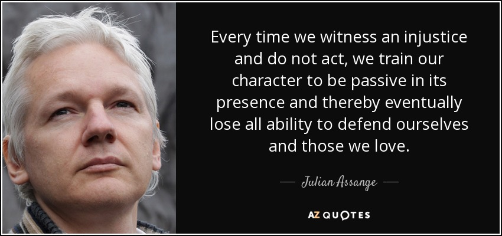
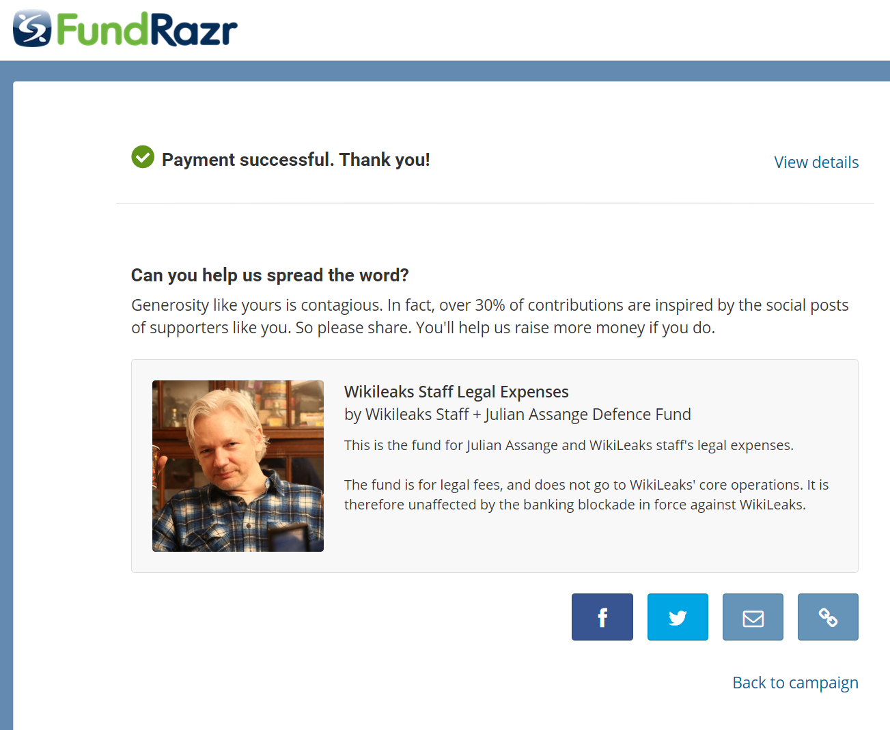

我给 Julian Assange 的捐款

“每一次我们遇到不正义的现象而不行动，我们的人格就变得被动和麻木。到后来，我们就会完全失去能力去保护我们自己和我们爱的人。” --Julian Assange
今天我给 WikiLeaks 创始人 Julian Assange 捐了款，用于帮助支付他的律师费用。WikiLeaks 是众多政府丑闻被曝光，受到群众监督的直接原因。它曝光出来的民主党和希拉里 email，唤醒了很多美国人，他们认识到这些人的真面目，导致了这次美国大选奇迹的出现。邪恶腐败的官僚，战争军火贩子们，被人民群众投票推翻。美国当局害怕事实和证据，害怕人民的力量，所以他们想方设法要消灭 WikiLeaks。
Assange 是人类自由的斗士，然而他却被美国当局及其伙伴们追杀和诬陷。在美国当局的指使下，英国和瑞典当局无端指控 Assange，却没有任何证据。他们唯一的目的就是把 Assange 抓住之后送到美国，然后施加迫害。因为这个原因，Assange 躲在厄瓜多尔驻英国领事馆，长达 4 年之久，承受各种压力，不能外出，相当于在坐牢。联合国已经根据国际人权法，判决 Assange 应该获得自由，可是美国当局及其盟友却不遵守人权法，继续无端指控。另外，他还有被美国政府派遣的特务暗杀的危险。
美国仍然是世界上最强大的国家之一，它的正义和自由，关系到全世界各个国家人民的利益。然而一直以来，美国政府的做法都很让人失望，而且带坏了很多其他国家。我希望 Trump 领导下的新美国政府，能让美国洗心革面，给世界做一个好榜样。
Assange 的这个基金，是用于支付律师费用，用于对抗这些毫无证据的无端指控，目前并没有收到很多的捐款。我呼吁大家（包括在中国的朋友们）给他捐款，帮助他重新获得自由。捐款地址是：
